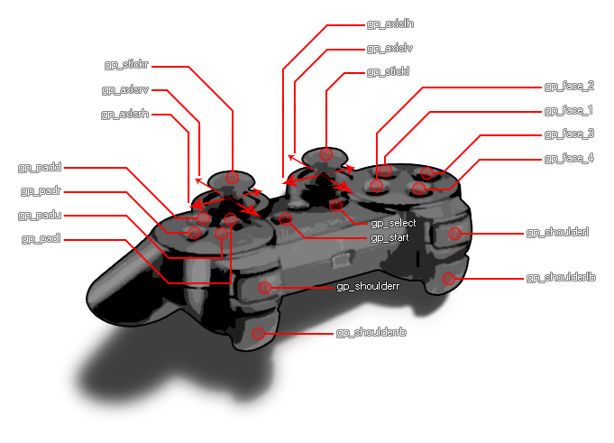

GameMaker:Studio has a number of dedicated functions that can be used to detect both analogue and digital controls from multiple connected gamepads. These functions work similar to the
Device Inputs, in that you can detect up to four different gamepads that are connected and deal with the input from each one using the same functions.
When working with the gamepad functions, there are a number of built-in constants that should be used for getting/defining buttons and stick axis etc... :
| Constant | Description |
|---|---|
| gp_face1 | Top button 1 (this maps to the "A" on an Xbox 360 controller and the cross on a PS3 controller) |
| gp_face2 | Top button 2 (this maps to the "B" on an Xbox 360 controller and the circle on a PS3 controller) |
| gp_face3 | Top button 3 (this maps to the "X" on an Xbox 360 controller and the square on a PS3 controller) |
| gp_face4 | Top button 4 (this maps to the "Y" on an Xbox 360 controller and the triangle on a PS3 controller) |
| gp_shoulderl | Left shoulder button |
| gp_shoulderr | Right shoulder button |
| gp_shoulderrb | Left shoulder trigger |
| gp_shoulderrb | Right shoulder trigger |
| gp_select | The select button |
| gp_start | The start button |
| gp_stickl | The left stick pressed (as a button) |
| gp_stickr | The right stick pressed (as a button) |
| gp_padu | D-pad up |
| gp_padd | D-pad down |
| gp_padl | D-pad left |
| gp_padr | D-pad right |
| gp_axislh | Left stick horizontal axis (analogue) |
| gp_axislv | Left stick vertical axis (analogue) |
| gp_axisrh | Right stick horizontal axis (analogue) |
| gp_axisrv | Right stick vertical axis (analogue) |
To better understand exactly what part of the controller each constant represents, you can refer to the following image of a standard gamepad:

Below you can find a list of all the gamepad functions:
- gamepad_is_supported
- gamepad_get_device_count
- gamepad_is_connected
- gamepad_get_description
- gamepad_get_button_threshold
- gamepad_set_button_threshold
- gamepad_axis_count
- gamepad_axis_value
- gamepad_button_check
- gamepad_button_check_pressed
- gamepad_button_check_released
- gamepad_button_count
- gamepad_button_value
- gamepad_set_vibration
The following list shows current compatibility across the platforms (note that this will change with future updates):
- Windows is fully supported with up to a maximum of 4 connected devices permitted at once.
- MacOS is fully supported with up to a maximum of 4 connected devices permitted at once.
- HTML5 games are only supported by Google Chrome (which should theoretically support any number of devices). At the moment no other browsers support gamepads like this, but future updates should extend this functionality to full, cross-browser support.
- Gamepad support also extends to iOS with the iCade cabinet. The left axis maps to the stick controller (although the input is digital, not analogue), the four "face" buttons map to the cabinet front buttons, and the four shoulder buttons map to those at the back of the cabinet.
- Android supports NYKO controllers and generic Bluetooth controllers, but only when they are enabled, meaning that you will have to tick the iCade/Bluetooth option in the Android Tab of the Global Game Settings. They require API level 12 for them to work fully and it should be noted that GameMaker:Studio will register as connected any Bluetooth devices that your device is paired with, whether or not it’s actually connected. Therfore this should be taken into account when assigning and checking "slots".